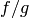
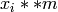
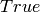

Polynomials Module¶
Introduction¶
This tutorial tries to give an overview of the functionality concerning polynomials within SymPy. All code examples assume:
>>> from sympy import *
>>> x, y, z = symbols('xyz')
Basic functionality¶
These functions provide different algorithms dealing with polynomials in the form of SymPy expression, like symbols, sums etc.
Division¶
The function div() provides division of polynomials with remainder. That is, for polynomials f and g, it computes q and r, such that f == g*q + r and degree(r) < q. For polynomials in one variables with coefficients in a field, say, the rational numbers, q and r are uniquely defined this way:
>>> from sympy import pprint
>>> import sys
>>> sys.displayhook = pprint
>>> f = 5*x**2 + 10*x + 3
>>> g = 2*x + 2
>>> q, r = div(f, g, domain='QQ')
>>> q
5*x
5/2 + ---
2
>>> r
-2
>>> (q*g + r).expand()
2
3 + 10*x + 5*x
As you can see, q has a non-integer coefficient. If you want to do division only in the ring of polynomials with integer coefficients you can specify an additional parameter:
>>> q, r = div(f, g, domain='ZZ')
>>> q
0
>>> r
2
3 + 10*x + 5*x
But be warned, that this ring is no longer euclidean and that the degree of the remainder doesn’t need to be smaller than that of f. Since 2 doesn’t divide 5, 2*x doesn’t divide 5*x**2, even if the degree is smaller. But:
>>> g = 5*x + 1
>>> q, r = div(f, g, domain='ZZ')
>>> q
x
>>> r
3 + 9*x
>>> (q*g + r).expand()
2
3 + 10*x + 5*x
This also works for polynomials with multiple variables:
>>> f = x*y + y*z
>>> g = 3*x + 3*z
>>> q, r = div(f, g, domain='QQ')
>>> q
y
-
3
>>> r
0
In the last examples, all of the three variables x, y and z are assumed to be variables of the polynomials. But if you have some unrelated constant as coefficient, you can specify the variables explicitly:
>>> a, b, c = symbols('abc')
>>> f = a*x**2 + b*x + c
>>> g = 3*x + 2
>>> q, r = div(f, g, domain='QQ')
>>> q
2*a b a*x
- --- + - + ---
9 3 3
>>> r
2*b 4*a
c - --- + ---
3 9
GCD and LCM¶
With division, there is also the computation of the greatest common divisor and the least common multiple.
When the polynomials have integer coefficients, the contents’ gcd is also considered:
>>> f = 12*(x + 1)*x
>>> g = 16*x**2
>>> gcd(f, g)
4*x
It also works with multiple variables. In this case, the variables are ordered alphabetically, be default, which has influence on the leading coefficient:
>>> f = x*y/2 + y**2
>>> g = 3*x + 6*y
>>> gcd(f, g)
x + 2*y
The lcm is connected with the gcd and one can be computed using the other:
>>> f = x*y**2 + x**2*y
>>> g = x**2*y**2
>>> gcd(f, g)
x*y
>>> lcm(f, g)
3 2 2 3
x *y + x *y
>>> (f*g).expand()
4 3 3 4
x *y + x *y
>>> (gcd(f, g, x, y)*lcm(f, g, x, y)).expand()
4 3 3 4
x *y + x *y
Square-free factorization¶
The square-free factorization of a univariate polynomial is the product of all factors (not necessarily irreducible) of degree 1, 2 etc.:
>>> f = 2*x**2 + 5*x**3 + 4*x**4 + x**5
>>> sqf_list(f)
2
(1, [(2 + x, 1), (x + x , 2)])
>>> sqf(f)
2
/ 2\
\x + x / *(2 + x)
Factorization¶
This function provides factorization of univariate and multivariate polynomials with rational coefficients:
>>> factor(x**4/2 + 5*x**3/12 - x**2/3)
2
-x *(1 - 2*x)*(4 + 3*x)
-----------------------
12
>>> factor(x**2 + 4*x*y + 4*y**2)
2
(x + 2*y)
Groebner bases¶
Buchberger’s algorithm is implemented, supporting various monomial orders:
>>> groebner([x**2 + 1, y**4*x + x**3], x, y, order='lex')
2 4
[1 + x , -1 + y ]
>>> groebner([x**2 + 1, y**4*x + x**3, x*y*z**3], x, y, z, order='grevlex')
4 3 2
[-1 + y , z , 1 + x ]
Solving Equations¶
We have (incomplete) methods to find the complex or even symbolic roots of polynomials and to solve some systems of polynomial equations:
>>> from sympy import roots, solve_poly_system
>>> solve(x**3 + 2*x + 3, x)
____ ____
I*\/ 11 I*\/ 11
[1/2 - --------, -1, 1/2 + --------]
2 2
>>> p = Symbol('p')
>>> q = Symbol('q')
>>> sorted(solve(x**2 + p*x + q, x))
___________ ___________
/ 2 / 2
p \/ -4*q + p p \/ -4*q + p
[- - + --------------, - - - --------------]
2 2 2 2
>>> solve_poly_system([y - x, x - 5], x, y)
[(5, 5)]
>>> solve_poly_system([y**2 - x**3 + 1, y*x], x, y)
___ ___
I*\/ 3 I*\/ 3
[(0, I), (0, -I), (1, 0), (-1/2 + -------, 0), (-1/2 - -------, 0)]
2 2
Poly¶
- class sympy.polys.Poly¶
Generic class for representing polynomials in SymPy.
- EC(f)¶
- Returns the last non-zero coefficent of
 .
.
- EM(f)¶
- Returns the last non-zero monomial of .
- ET(f)¶
- Returns the last non-zero term of .
- LC(f)¶
- Returns the leading coefficent of .
- LM(f)¶
- Returns the leading monomial of .
- LT(f)¶
- Returns the leading term of .
- TC(f)¶
- Returns the trailing coefficent of .
- abs(f)¶
- Make all coefficients in positive.
- add(f, g)¶
- Add two polynomials and
 .
.
- all_coeffs(f)¶
- Returns all coefficients from a univariate polynomial .
- all_monoms(f)¶
- Returns all monomials from a univariate polynomial .
- all_terms(f)¶
- Returns all terms from a univariate polynomial .
- args¶
- Don’t mess up with the core.
- as_basic(f, *gens)¶
- Convert a polynomial instance to a SymPy expression.
- as_dict(f)¶
- Switch to a dict representation with SymPy coefficients.
- cancel(f, g)¶
- Cancel common factors in a rational function .
- coeffs(f)¶
- Returns all non-zero coefficients from in lex order.
- cofactors(f, g)¶
- Returns GCD of and and their cofactors.
- compose(f, g)¶
- Computes functional composition of and .
- content(f)¶
- Returns GCD of polynomial coefficients.
- decompose(f)¶
- Computes functional decomposition of .
- deflate(f)¶
- Reduce degree of by mapping  to
 .
.
- degree(f, gen=0)¶
- Returns degree of in
 .
.
- degree_list(f)¶
- Returns a list of degrees of .
- diff(f, *specs)¶
- Computes partial derivative of .
- discriminant(f)¶
- Computes discriminant of .
- div(f, g)¶
- Polynomial division with remainder of by .
- eval(f, a, gen=0)¶
- Evaluates at
 in the given variable.
in the given variable.
- exquo(f, g)¶
- Computes polynomial exact quotient of by .
- factor_list(f, **args)¶
- Returns a list of irreducible factors of .
- gcd(f, g)¶
- Returns polynomial GCD of and .
- gcdex(f, g, **args)¶
- Extended Euclidean algorithm of and .
- gen¶
- Return principal generator.
- get_domain(f)¶
- Get the ground domain of .
- get_modulus(f)¶
- Get the modulus of .
- ground_to_ring(f)¶
- Clear denominators, but keep the ground domain.
- half_gcdex(f, g, **args)¶
- Half extended Euclidean algorithm of and .
- integrate(f, *specs, **args)¶
- Computes indefinite integral of .
- intervals(f, **args)¶
- Compute isolating intervals for roots of .
- invert(f, g, **args)¶
- Invert modulo , if possible.
- is_ground¶
- Returns  if is an element of the ground domain.
- is_homogeneous¶
- Returns if has zero trailing coefficient.
- is_irreducible¶
- Returns if has no factors over its domain.
- is_linear¶
- Returns if is linear in all its variables.
- is_monic¶
- Returns if the leading coefficient of is one.
- is_monomial¶
- Returns if is zero or has only one term.
- is_multivariate¶
- Returns if is a multivariate polynomial.
- is_one¶
- Returns if is a unit polynomial.
- is_primitive¶
- Returns if GCD of coefficients of is one.
- is_sqf¶
- Returns if is a square-free polynomial.
- is_univariate¶
- Returns if is an univariate polynomial.
- is_zero¶
- Returns if is a zero polynomial.
- l1_norm(f)¶
- Returns l1 norm of .
- lcm(f, g)¶
- Returns polynomial LCM of and .
- length(f)¶
- Returns the number of non-zero terms in .
- lift(f)¶
- Convert algebraic coefficients to rationals.
- max_norm(f)¶
- Returns maximum norm of .
- monic(f)¶
- Divides all coefficients by
 .
.
- monoms(f)¶
- Returns all non-zero monomials from in lex order.
- mul(f, g)¶
- Multiply two polynomials and .
- neg(f)¶
- Negate all cefficients in .
- nroots(f, **args)¶
- Compute numerical approximations of roots of .
- nth(f, *N)¶
- Returns the
 -th coefficient of .
-th coefficient of .
- pdiv(f, g)¶
- Polynomial pseudo-division of by .
- per(f, rep, gens=None, remove=None)¶
- Create a Poly out of the given representation.
- pexquo(f, g)¶
- Polynomial exact pseudo-quotient of by .
- pow(f, n)¶
- Raise to a non-negative power .
- pquo(f, g)¶
- Polynomial pseudo-quotient of by .
- prem(f, g)¶
- Polynomial pseudo-remainder of by .
- primitive(f)¶
- Returns content and a primitive form of .
- quo(f, g)¶
- Computes polynomial quotient of by .
- rem(f, g)¶
- Computes polynomial remainder of by .
- reorder(f, *gens, **args)¶
- Efficiently apply new order of generators.
- replace(f, x, y=None)¶
- Replace
 with
with  in generators list.
in generators list.
- resultant(f, g)¶
- Computes resultant of and via PRS.
- set_domain(f, domain)¶
- Set the ground domain of .
- set_modulus(f, modulus)¶
- Set the modulus of .
- sqf_list(f, **args)¶
- Returns a list of square-free factors of .
- sqf_norm(f)¶
- Computes square-free norm of .
- sqf_part(f)¶
- Computes square-free part of .
- sqr(f)¶
- Square a polynomial .
- sturm(f, **args)¶
- Computes the Sturm sequence of .
- sub(f, g)¶
- Subtract two polynomials and .
- subresultants(f, g)¶
- Computes subresultant PRS sequence of and .
- terms(f)¶
- Returns all non-zero terms from in lex order.
- terms_gcd(f)¶
- Remove GCD of terms from the polynomial .
- to_field(f)¶
- Make the ground domain a field.
- to_ring(f)¶
- Make the ground domain a ring.
- total_degree(f)¶
- Returns the total degree of .
- trunc(f, p)¶
- Reduce modulo a constant
 .
.
- unify(f, g)¶
- Make and belong to the same domain.
- unit(f)¶
- Return unit of ‘s polynomial algebra.